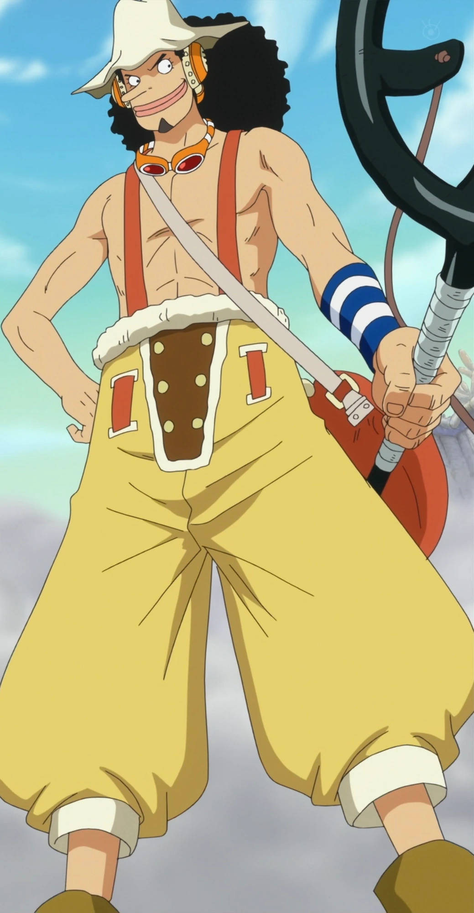
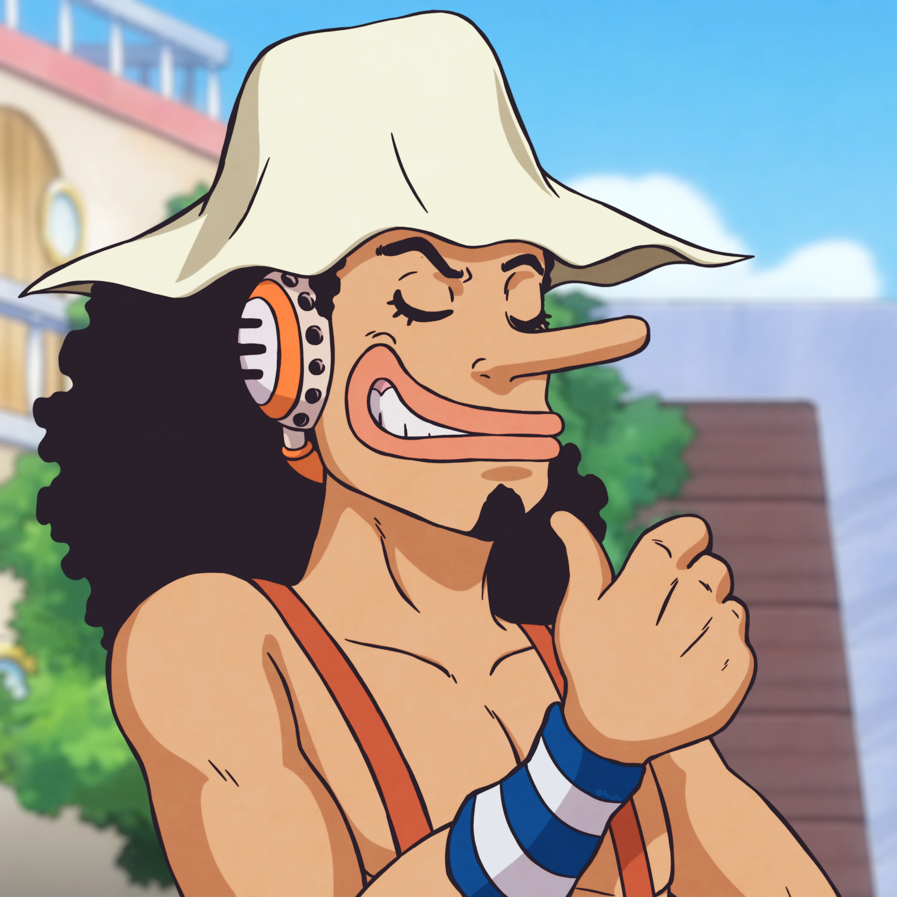

También conocido como "Dios Usopp" o su alter-ego "Sogeking", es el francotirador de los Piratas de Sombrero de Paja. Su sueño es convertirse en un valiente guerrero del mar.
Nacido en la Villa Syrup en el East Blue, es hijo de Yasopp, el francotirador de los Piratas del Pelirrojo. Mentía a diario en su pueblo gritando que venían los piratas. Cuando una amenaza pirata real liderada por el Capitán Kuro atacó la villa, Usopp se alió con Luffy y Zoro para proteger a su amiga Kaya. Tras derrotar a Kuro, Kaya regaló a la tripulación el barco Going Merry, y Usopp se unió formalmente a la banda.

Sus rasgos más distintivos son su larga nariz y sus labios gruesos. Tiene el pelo negro y rizado. Tras el salto temporal de dos años, se volvió más musculoso, se dejó una pequeña perilla y suele llevar gafas de francotirador en el cuello o la cabeza, además de un gran sombrero blanco.

Rol: Francotirador
Apodo: Dios Usopp
Recompensa actual: 500.000.000 Berries
Lugar de origen: East Blue